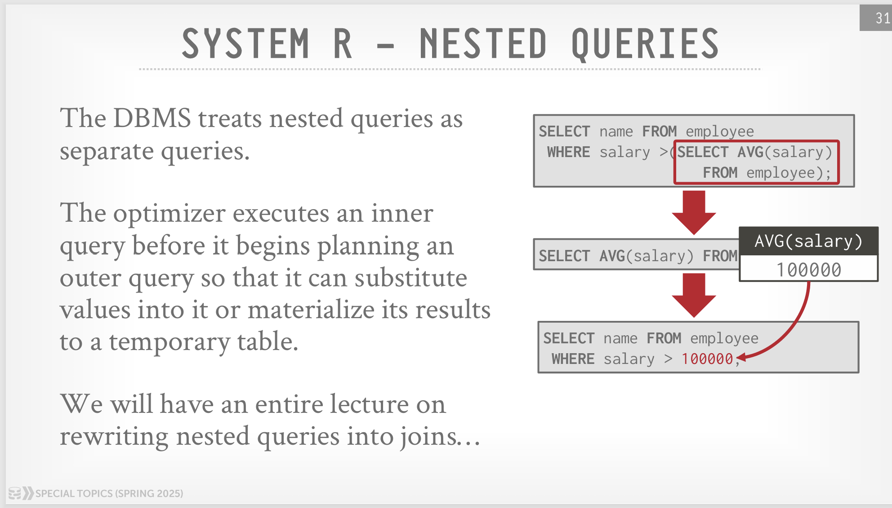

SystemR
IBM System R 优化器的总体执行步骤是：
- 执行所有的 RBO
- 为每个单表选出最佳的 Access Path（Seq Scan 或者 Index Scan）。
- 采用左深树动态规划确定 join 顺序
因为后两步都是 CBO，所以这篇博客主要讲讲 System R 的代价模型。
查询结果规模估算¶
System R 使用 selectivity factor 表示一个谓词命中的概率，下面用 \(\text{F}\) 指代 selectivity factor。\(\text{F}\) 是一个 \([0,1]\) 的值，如果 \(\text{F}(\text{cond}_i)\) 的值越小，表示 \(\text{cond}_i\) 满足的概率越小（过滤能力越强）。
假设一个表 \(T\) 有 \(\text{NCARD}(T)\) 个元组，则 \(\text{NCARD}(T) \times \text{F}(\text{cond}_i)\) 表示应用谓词 \(\text{cond}_i\) 之后筛选出的结果大小。
在谓词下推之后，每个表的上方都是是一种主合取范式的形式 \(\text{cond}_1 \land \text{cond}_2 \land \text{cond}_3 \ ...\)，应用所有谓词之后的结果大小就是 \(\text{NCARD}(T) \times \prod \text{F}(\text{cond}_i)\)
System R 的统计信息包括每个表的元组数量、每个索引不同 key 的数量、每个索引最大的 key 和最小的 key 等。为了对每个谓词模式计算出恰当的 \(\text{F}\) 值，System R 还有一个重要的假设：
This assumes an even distribution of tuples among the index key values.
假设所有索引中的 key 是均匀分布的。
\(F\) 值的计算方式如下：
-
column = value
-
如果
column有可用的索引， \(\text{F} = \frac{1}{\text{ICARD(column index)}}\)，其中 \(\text{ICARD(I)}\) 表示索引 \(\text{I}\) 中不同 key 的个数 -
否则，\(\text{F} = \frac{1}{10}\)
-
-
column1 = column2
-
如果
column1和column2都有可用的索引， \(\text{F} = \frac{1}{\max(\text{ICARD(column1 index)},\text{ICARD(column2 index)})}\) -
如果只有
column-i有可用的索引， \(\text{F} = \frac{1}{\text{ICARD(column-i index)}}\) -
否则，\(\text{F} = \frac{1}{10}\)
-
-
column > value
-
如果
column有可用的索引、 且column是算术式、且value的值固定， \(\text{F} = \frac{\text{max key} - \text{value}}{\text{max key} - \text{min key}}\) -
否则，\(\text{F} = \frac{1}{3}\)
这里第二种情况包括：
value值不固定、column没有可用的索引、column不是算术式（例如字符串，无法相减）等。取 \(\text{F} = \frac{1}{3}\) 这个值是因为假定了用户的过滤条件能过滤掉至少一半的元组，但这个值又会比column = value的 \(\frac{1}{10}\) 大一些。 -
-
column BETWEEN value1 AND value2
- 如果
column有可用的索引、 且column是算术式、且value1和value2的值固定， \(\text{F} = \frac{\text{value2} - \text{value1}}{\text{max key} - \text{min key}}\) - 否则，\(\text{F} = \frac{1}{4}\)
选取 \(\frac{1}{4}\) 要比
column > value的 \(\frac{1}{3}\) 小一些。 - 如果
-
column IN (list)
- \(\text{F} = \text{len(list)} \times \text{F}(\text{column = value})\)
-
columnA IN subquery
- \(\text{F} = \frac{\text{子查询的估计规模}}{\text{子查询 FROM 中所有的表的元组的乘积}}\)
-
(pred1) OR (pred2)
- \(\text{F} = \text{F(pred1)} + \text{F(pred2)} - \text{F(pred1)} \times \text{F(pred2)}\)
-
(pred1) AND (pred2)
- \(\text{F} = \text{F(pred1)} \times \text{F(pred2)}\)
-
NOT pred
- \(\text{F} = 1 - \text{F(pred)}\)
Access Path 成本估算¶
对于一个单表，可以选择用 Index Scan 或者 Seq Scan，每种方式称为一条 Access Path，Access Path 的成本估算的通用公式为： $$ \text{COST} = \text{PAGE FETCHES} + W \times (\text{RSI CALLS}) $$ 其中，\(\text{PAGE FETCHES}\) 表示 IO 了多少个页面（估计值），\(\text{RSI CALLS}\)（也即 \(\text{RSICARD}\) ） 表示应用了所有可搜索（sargable，原文有详细的定义）的谓词之后得到的元组数量（估计值），\(W\) 是一个系数，用来量化磁盘 IO 和计算的开销倍数。
总的来说，这个公式就是综合了磁盘 IO 的成本和 CPU 计算的成本。
选用不同的索引或全表扫描，带来的成本也是不同的，但本质都是上面公式的特例，具体如下：
-
如果有一个等值谓词，且该列有唯一键索引，则 \(\text{COST} = 1 + 1 + W\)
这里假定 B+ 树的非叶子节点都在内存池中，所以最多 IO 一个叶子节点索引页、一个数据页，以及一次 RSI CALL。
-
如果有聚集索引 \(\text{I}\) 命中了一个或多个谓词，则 \(\text{COST} = \text{F(preds)} \times (\text{NINDS(I)} + \text{TCARD}) + W \times \text{RSICAR}\)，其中 \(\text{NINDS(I)}\) 表示索引 \(\text{I}\) 的页面数量，\(\text{TCARD}\) 表示这个表的页面数量。
这个公式直接用 \(\text{F(preds)}\) （这里的 \(\text{preds}\) 指的是命中索引的谓词，而不是所有可搜索谓词）作为页面的比例。
-
如果有辅助索引 \(\text{I}\) 命中了一个或多个谓词，分两种情况：
-
如果内存池装得下足够多的页面，则 \(\text{COST} = \text{F(preds)} \times (\text{NINDS(I)} + \text{TCARD}) + W \times \text{RSICAR}\)，和聚集索引一致。
-
否则，\(\text{COST} = \text{F(preds)} \times (\text{NINDS(I)} + \text{NCARD}) + W \times \text{RSICAR}\)，其中 \(\text{NCARD}\) 表示这个表的元组数量。
这里因为内存池装不下，且是辅助索引，最坏的情况就是每读一个元组都要把数据页 IO 进来，所以最坏就是有 \(\text{NCARD}\) 次页面 IO。
-
-
如果有聚集索引 \(\text{I}\) 没有命中任何谓词，则 \(\text{COST} = (\text{NINDS(I)} + \text{TCARD}) + W \times \text{RSICAR}\)
-
如果有辅助索引 \(\text{I}\) 没有命中任何谓词，分两种情况：
- 如果内存池装得下足够多的页面，则 \(\text{COST} = (\text{NINDS(I)} + \text{TCARD}) + W \times \text{RSICAR}\)，和聚集索引一致。
- 否则，\(\text{COST} = (\text{NINDS(I)} + \text{NCARD}) + W \times \text{RSICAR}\)
-
全表扫描，\(\text{COST} = \frac{\text{TCARD}}{P} + W \times \text{RSICAR}\)，这里 \(P\) 表示这个表在一个 Segment 的非空页面比例，所以把这个 \(\frac{\text{TCARD}}{P}\) 的含义就是表所在的 Segment 的非空页面数量。（受当时计算机硬件的限制，System R 会把很多个表放在同一个 Segment，所以全表扫描实际是扫的一整个 Segment）
有趣顺序¶
原文是 interesting order，指的是对哪些列排序感兴趣，有三种来源：
- Order By 中的列
- Group By 中的列
- 出现在 Join 条件中的列
一个表并不是只考虑一种 Access Path，而是考虑所有的有趣顺序，这是因为如果一个表以某个有趣顺序扫描出来的话，就可以免去后续的排序开销。（当时没有哈希的 Group By 和 Hash Join，所以对于后两种，也被视为有趣的顺序）。
每个表需要考虑所有需要用到的有趣顺序，估算出对应的成本。对于单表来说，获得一种有趣的顺序有两种办法：通过对应的索引扫描，或者通过其他扫描方式（包括全表扫描），再加上排序的成本。
多表 Join 成本估算¶
经典的自下而上的动态规划，由于还需考虑后续的有趣顺序，所以实现上，应该是用 \(dp[s][i]\) 表示状态为 \(s\) 的表已经 Join，且有趣的顺序为 \(i\) 的最低成本。
在 dp 的时候可以应用以下规则减少搜索空间：
- 尽量避免会产生笛卡尔积的 Join。
- 只考虑左深树以减少时间复杂度。（受限于当时的硬件，如果不用左深树，一方面时间复杂度高，另一方面 Join 之后的中间表会变的很大，不用左深树就意味着会有两个以上的大表，内存池可能装不下，如果把大表刷回磁盘就又会有开销）
System R 发表时还没有哈希 join，join 的方式只有两种：NLJ 和 Sort Merge Join：
NLJ 成本估算¶
考虑外表和内表，设外表满足所有可搜索谓词的元组数量为 \(N\)，则 \(N = \text{外表所有关系的元组数量的乘积} \times \text{外表所有可搜索谓词的 F 值}\)
可以理解为，\(N\) 就是外表预计产生的元组数量。NLJ 的成本公式为： $$ C_\text{NLJ(pathl,path2)}= C_\text{outer}(\text{path1}) + N * C_\text{inner}(\text{path2}) $$ 这个公式比较简单，外层扫出 \(N\) 条，然后扫内层即可。
Merge Join 成本估算¶
Merge Join 可以获得有趣的顺序，但 Merge Join 的前提是内表和外表都是有序的。和前面所说的一样，要想获得有序的表，要么在 dp 的时候直接使用这个有趣的顺序，要么就在其他顺序中选一个排序之后成本最低的参与计算。成本公式为： $$ C_\text{Merge(pathl,path2)}= C_\text{outer}(\text{path1}) + \text{InnerPage} + N \times W \times \text{RSICAR} $$ 上述公式忽略了排序的成本。（这个公式和原文是等价的）
总结¶
作为最经典的优化器论文，System R 提供了一个简单、切实可行的优化器架构。许多现代优化器都能看到 System R 的影子。
其优点有：
- 不仅涵盖了 RBO，而且有 CBO，能搜索出相对较好的连接方式。
- 介绍了一种简单可行的代价模型。
- 能够优化多表 join 场景，对于嵌套子查询也能优化一部分。
其缺点有：
-
代价模型认为所有 key 是均匀分布的，这不符合实际情况，需要更加复杂的统计信息、代价模型。
-
在处理嵌套子查询的时候，System R 实际是对多个子查询进行分解，也就是先物化内层的子查询，然后才会开始上层的优化（成本估算）。这种方式有时候效果并不好（因为会多出一些 IO 的成本）
详细如图（图片来自 cmu 15-799）

System R 的执行器是会物化中间表，而不是像 Volcano 一样一次只返回一条数据，就会有这样的问题
创建日期: 2025-05-21